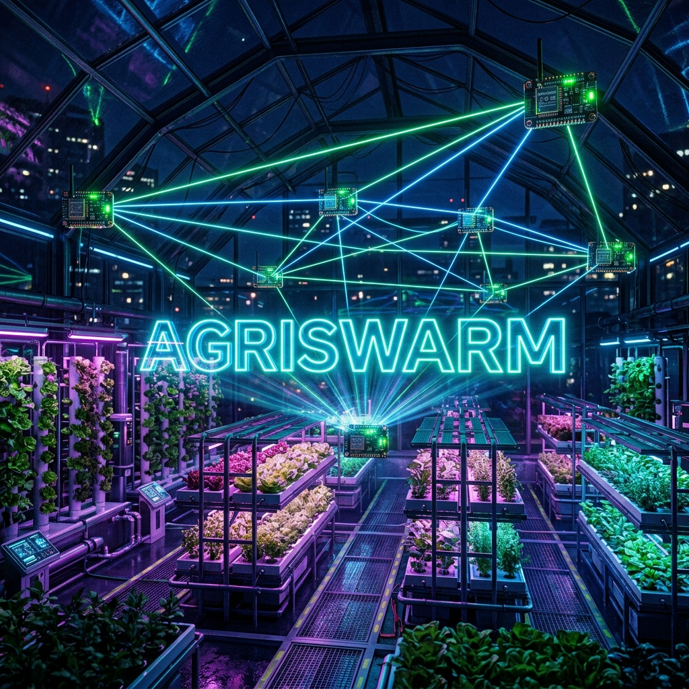
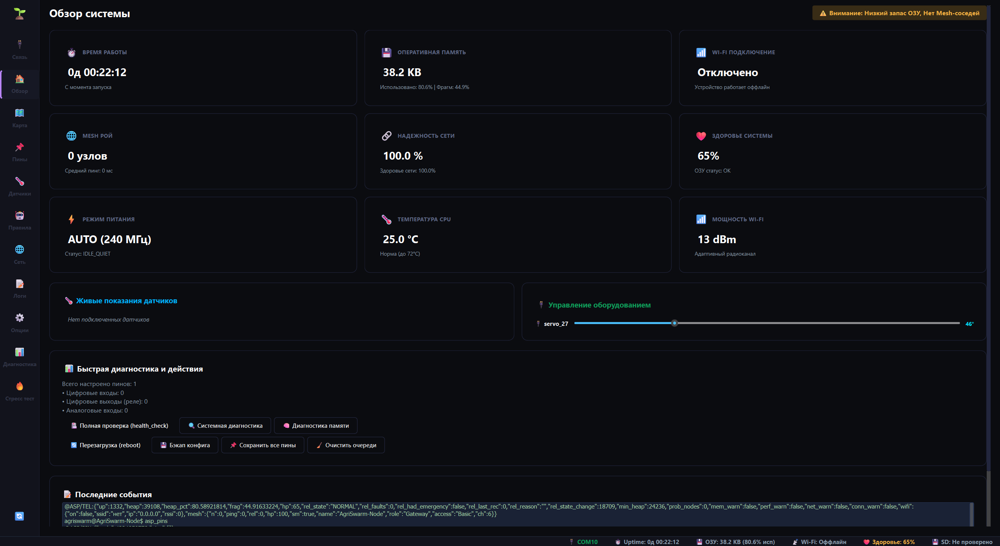
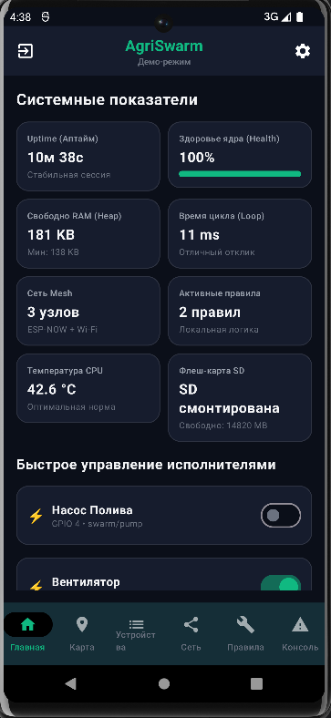

Меньше ручного контроля
В теплице условия меняются в течение дня. Измерение полезно, когда за ним вовремя следует нужное действие.
АМУР ТЕХНО / ПРОЕКТ AGRISWARM
Система на небольших платах ESP32 следит за показаниями датчиков и управляет оборудованием по заданным условиям. Решения принимаются прямо на месте.
ESP32Правила на платеИнженерный прототип

В теплице условия меняются в течение дня. Измерение полезно, когда за ним вовремя следует нужное действие.
«Если стало жарко — включить вентиляцию». Вы задаёте условие, плата выполняет его без постоянного участия человека.
Начните с одной точки. Обмен данными между платами позволяет связать датчики и оборудование в разных местах.
01 / ПРИНЦИП
Не просто узнать температуру, а связать её с нужным действием. Условие задаёте вы, правило выполняет ESP32.
Датчик передаёт температуру, влажность или состояние контакта.
Плата сравнивает показание с порогом, который вы настроили.
Выход подаёт сигнал реле, индикатору или приводу.
Локальному правилу не нужен постоянный доступ к интернету. Плата, датчик и оборудование должны оставаться исправными и получать питание.
ПРИМЕР СТЕНДА
Так можно показать, зачем системе нужны локальные правила и связь между платами. Схема ниже — иллюстрация планируемого стенда, не результат испытания двух узлов.
Плата принимает показание и решает, нужен ли локальный выход.
У второго узла могут быть другие пороги и действия.
Для подключения реле и сервоприводов нужны подходящее питание, схема и проверка безопасного состояния выходов. Межузловой сценарий показывается только после проверки на двух платах.
НАСТРОЙКА БЕЗ ПЕРЕПРОШИВКИ
Пример пользовательского пути: назвать вход и выход, задать условие, сохранить настройку и проверить реакцию на стенде.
Для первого запуска достаточно понятных имён устройств и одного правила. Более тонкие параметры — например, поведение датчика и тайм-ауты — нужны тем, кто настраивает конкретное оборудование.
В текущей разработке ПК-приложение и Android-клиент содержат средства чтения и сохранения карты на ESP32. Сквозную совместимость версий и разрешение одновременных правок ещё нужно проверять отдельно.
Изучить публичный гид ↗ОБОРУДОВАНИЕ / НАСТРОЙКА
Начните с понятного имени. Когда задача станет сложнее — настройте опрос, питание и реакцию конкретного устройства.
Цифровые и аналоговые входы, DHT11 и DHT22. Для кнопок — режим и подавление дребезга; для аналогового сигнала в драйвере предусмотрено EMA-сглаживание.
Индикаторы, релейные модули и сервоприводы. У привода можно настраивать угол, пределы, скорость и поведение управляющего сигнала.
Для поддерживаемых типов: управляющий контакт powerPin, внешний ключ и задержка стабилизации. GPIO управляет ключом, а не питает рабочую нагрузку напрямую.
Принцип для поддерживаемого датчика, не универсальная схема подключения. Экономию энергии и влияние на срок службы нужно измерять на выбранном оборудовании.
ИНТЕРФЕЙСЫ ПРОЕКТА
Эти два снимка показывают обзорные панели Android и ПК. Числа относятся к моменту съёмки, а не к гарантированным характеристикам устройства.


КАРТА / АВТОМАТИКА / КОНТРОЛЬ
Карта помогает ориентироваться, правила задают реакцию, а диагностика объясняет, что произошло. Эти инструменты дополняют друг друга.
Клиенты содержат пути чтения и сохранения карты на плате. На ПК есть импорт, экспорт и локальные резервные копии. В Android оборудование на карте отделено от сетевого обзора плат.
Карта не заменяет настройки пинов и правил. После сохранения проверьте ответ платы и контрольное чтение; совместимость версий и одновременные правки требуют проверки.
Правило реагирует на показание. Периодическая задача выполняет действие через интервал. Алгоритм описывает последовательность действий, условий и пауз.
Тест-режим подставляет показания для проверки логики. Выход при этом может сработать физически — первый опыт проводите с индикатором.
Веб-ресурсы хранятся в прошивке в сжатом виде; предусмотрен Standby и активация панели. Локальные правила не зависят от открытой страницы.
Консольные мастера pin_wizard, rule_wizard и algo_wizard помогают пройти настройку по шагам. Список команд своей сборки можно узнать через help.
Память и время работы, сеть, журнал событий и BlackBox. В разработке также есть поддержка SD и управление режимами через PowerGovernor; MQTT остаётся экспериментальной интеграцией. Доступность зависит от оборудования и сборки.
02 / ОСОБЕННОСТЬ
AgriSwarm объединяет локальное управление, обмен данными и настройку поведения в одной системе.
После настройки локального сценария ESP32 сама получает показания и выполняет действия. Интерфейс нужен для настройки и наблюдения.
Датчик может находиться на одной плате, а управляемое устройство — на другой. Такой сценарий требует исправной связи между узлами.
Имена устройств, пороги и правила задаются через предусмотренные интерфейсы. Для этих задач исходный код не нужен.
Смотрите показания и состояния, проверяйте команды и изучайте журнал событий. Чёрный ящик помогает разбирать сбои.
Отдельные технологии известны. Особенность проекта — их сочетание для настраиваемой автоматики рядом с оборудованием.
03 / ПРИМЕНЕНИЕ
Три сценария, которые объясняют идею проекта. Это варианты применения, а не отчёты о готовых внедрениях.
Температура превысила порог — правило подаёт команду на вентиляцию. Для первого опыта вентилятор можно заменить индикатором.
Совместимые датчики собирают показания в разных точках. Это основа для наблюдения за условиями и подготовки автоматики полива.
Кнопка или датчик меняет вход, а правило переключает индикатор. Наглядный способ разобраться в автоматике и связи устройств.
Для рабочей установки нужно подобрать датчики, питание и механизмы, затем проверить весь сценарий. Экономия воды и энергии пока не заявлена как измеренный результат.
04 / ДЕМОНСТРАЦИЯ
Сценарий выступления на «Амур Техно»: показать путь от изменения показания до реакции оборудования на подготовленном низковольтном стенде.
Открыть публичный гидНажмите кнопку или измените показание датчика. Индикатор покажет, что условие сработало. На стенде он заменяет рабочее оборудование.
Задайте другой порог и повторите опыт. Так зритель увидит, как меняется поведение без перепрошивки платы.
Сохраните питание и повторите локальный опыт с закрытой веб-панелью. Это показывает, что правило выполняет плата, а не открытая страница.
05 / РАЗВИТИЕ
Сейчас AgriSwarm — инженерный прототип. Ближайшая цель — воспроизводимый стенд и проверка поведения в длительной работе.
Датчики, выходы, правила, задачи, сетевой обмен, консоль, веб-панель и журналы. Совместимость проверяется по конкретной сборке.
Безопасный запуск, аварийный останов, поведение при потере связи и восстановление. Новая защита ещё не заявлена как подтверждённая.
Прошивка, схема, настройки и результаты, по которым другой человек сможет собрать стенд. Затем — несколько зон и длительные испытания.
На 29 сентября 2026 года в коде прошивки указана версия v4.0.4. Эта страница описывает текущую разработку: перед установкой сверяйте состав конкретного выпуска и совместимость приложений. Снимки интерфейсов не заменяют аппаратных испытаний.
06 / ВОПРОСЫ
Уже настроенные локальные правила выполняются на ESP32 без обязательного облачного сервиса. Если правило использует другую плату, связь между этими платами необходима. Потеря интернета и потеря связи с датчиком — разные ситуации.
Для изменения предусмотренных настроек, порогов и правил не нужно переписывать прошивку. Для подключения оборудования нужно разобраться в питании и назначении контактов. Начать лучше с инструкции и простого низковольтного стенда.
Прошивка закрытая. В публичном репозитории доступны описание проекта, пользовательская документация и сведения о выпусках. Условия использования указаны в лицензии.
Сейчас это инженерный прототип. Дальность, число устойчиво работающих узлов, длительная надёжность и промышленная сертификация не заявлены как подтверждённые характеристики. Рабочая установка требует проверки своих условий.
AGRI SWARM